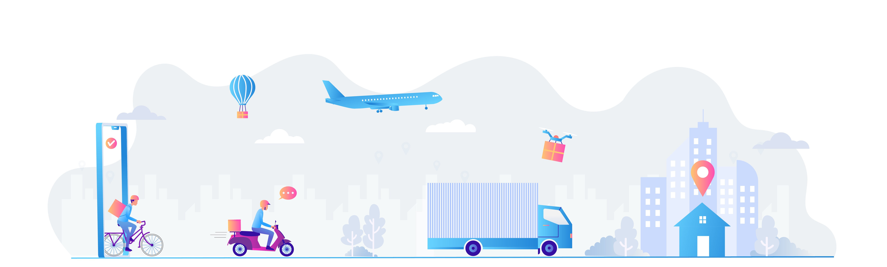
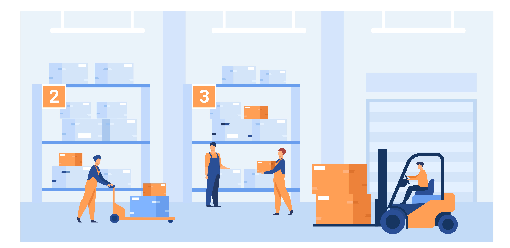

SERVICES
Our Road Freight Products offer high quality road transportation, from standard services such as Less-than-Truck Load (LTL) or Full-Truck Load (FTL) shipments to temperature controlled and highly secured transports.
Surface transport is certainly the oldest, the most immediate, the most flexible and the most used for short distances, especially in the twentieth century thanks to the speed and comfort of the asphalt and the advent of highways. Land or "ground" shipping can be by train or by truck (British English: lorry). In air and sea shipments, ground transport is required to take the cargo from its place of origin to the airport or seaport and then to its destination because it is not always possible to establish a production facility near ports due to the limited coastlines of countries.
Ground transport is typically more affordable than air, but more expensive than ocean transport, especially in developing countries, where inland infrastructure may not be efficient. Shipment of cargo by trucks, directly from the shipper's place to the destination, is known as a door to door shipment and more formally as multimodal transport. Trucks and trains make deliveries to sea ports and airports where cargo is moved in bulk. This type of transport is ideal, as we have said, for the short and medium distances and compared to the other types of transport it offers a "door to door" service.
However, ground transport can also be the most tiring and expensive system if the recipient of the goods resides in a far away place, difficult to reach. Basically, it is advisable for short or relatively short journeys; it is highly inadvisable to transport a product thousands of kilometers away. Another negative aspect of ground transport concerns pollution: the need to respect ever more the parameters for reducing greenhouse gas emissions, as also agreed by G8 representatives, is slowing down the use of road transport. G8 also endorsed an emission reduction target of −50% by 2050.
With our broad product range we cover different equipment types and consolidation services to ensure your cargo reaches the right place, at the right time in a cost-efficient way. In order to deliver highest reliability we have planned space protection from every major container port in the world.
Ocean freight (or sea freight) is the most common form of transport for importers and exporters, accounting for 90% of goods transported globally.
Sea transport is used to cover large distances and is suitable for non-perishable goods: generally, in fact, it is the most economical type of transport, but it is also slower. The weather can vary from a few days to months, depending on the distance and the services available. A positive aspect is that with this type of transport it is possible to move large quantities of materials compared to competitors by land and air, which have much more limited possibilities.
Increasing difficulties are instead given by finding, once the goods have arrived in the port, an adequate connection network with the hinterland.
However, sea transport remains the ideal vehicle for long distances and large international loads, of course if the company has a turnover that covers the costs of the service.
GlobeX Shipper Air Freight is here to get your goods to market quickly and reliably, promising on-time deliveries to and from every country globally, in total compliance with local regulations. We work closely with you to provide an extensive and flexible range of services, designed to suit your needs, enable your success and help you deliver on your promises.
As far as air transport is concerned, the great advantage is speed: a product can reach the other part of the world very quickly, normally at most within 10 days considering the technical time of organization. Among the negative aspects, first of all there is the cost, higher than sea and land transport. Then, the environmental impact: according to some statistics, a thousand kilos of cargo emit an average of 500 grams of carbon dioxide per kilometer that the goods travel on a modern aircraft. On the other hand, if a merchant ship is used, the emission is reduced to 15 grams per kilometer. Air transport therefore pollutes much more. Another factor to consider is that relating to the multiplication of routes and the increasingly complicated management of the nodes of exchange in large airports.
In conclusion, the type of transport that you will want to use also depends heavily on the goods: a merchant ship is strongly advisable to transport non-perishable goods, such as feed and cereals, as well as equipment and machinery of various nature or raw materials such as coal, minerals, iron , steel, sand and so on. The use of the air freight, on the other hand, is advisable when moving perishable goods or high economic value goods, from jewels to works of art, as long as they are not large materials, considering the reduced measures of the hold. Overland transport is essential to finalize the other two types of transport, allowing a widespread distribution throughout the territory.


A smart warehouse is a large building in which raw materials and manufactured goods are stored that uses machines and computers to complete common warehouse operations previously performed by humans. These operations include identifying and receiving orders, counting products, storing products and remembering where they are later and sending orders to the correct place. The most successful smart warehouses automate nearly the entire operation and journey of goods from supplier to customer, with negligible errors.
Smart warehouses are inspired by smart factories and adopt a similar data-driven environment. They incorporate various automated and interconnected technologies to create a technological environment in which goods and requests can be received, sorted, organized, recognized and prepped for shipment automatically. This collaboration of technologies allows warehouse workers to increase the productivity, quality and efficiency of their facility while decreasing the number of errors that occur and minimizing the amount of human workers needed.
Smart warehouses rely heavily on robotics, the Internet of Things (IoT) and artificial intelligence (AI) to allow technology to perform tasks -- like managing inventory and locating products around the warehouse -- rather than having the job performed by humans.
Other important components of a smart warehouse include:
The robots used in smart warehouses frequently resemble Roombas, or robotic vacuums, and automate the product retrieval process by physically delivering requested items to the human employees packaging the orders. The IoT is what allows the robots in the smart warehouse system to communicate with all the other necessary technology and complete their tasks.
In a warehouse, pick, pack, and ship is the process that happens after an order is received, either from an online store or a brick and mortar store. The warehouse receives a pick list of products, and people or automated systems find the products within the warehouse. Then, they are packed for shipping, labeled, and shipped to the customer.
The standard pick and pack process is the same and has four primary steps. That’s true if you use a 3PL like us for pick and pack services or run fulfillment yourself. The steps are:

Shipping your orders may seem simple. However, there is a complex science behind the efficient pick and pack methods. Knowledge of these methods and strategies can help you run your business better. This is true whether you are a mom-and-pop eCommerce shop or a million-dollar online store.
Cold storage does exactly what its name implies: it stores temperature sensitive items at low temperatures. Cold storage warehouses allow medicine, perishable foods, plants, cosmetics, artwork, and candles to have longer lives. Cold storage warehouses also use refrigerated shipping for inbound and outbound shipping.
Cold storage and associated warehousing are nothing new. Since people have always needed to eat, we’ve been storing food at cold temperatures long before the convenience of home fridges and freezers were invented. The premise being that by keeping food products cold they last longer thus maintaining quality and safety.
Over time, cold storage warehousing has graduated from Victorian-era ice houses to industrial scale processes that utilize sophisticated, high-tech facilities, often with high levels of automation.
As of 2018, the global frozen food market was valued at 260.8 billion dollars U.S. Then the COVID-19 pandemic hit.
The essential need to keep the nascent Pfizer-BioNTech vaccine at extreme sub-zero temperatures was a test to see just how robust the cold chain and supportive logistics services were.
With cold storage warehousing plunged into the spotlight, most of the concern was directed to how pharmacies and vaccination centres would cope with receiving and maintaining large volumes of vaccine at the required -70°C temperature.
A growing trend in warehousing is on-demand storage. On-demand warehousing connects businesses with a need for warehouse space (temporary, seasonal, or to handle spikes in sales) with warehouses that have excess space.
On-demand warehousing is an online platform that offers sellers to store their inventory and fulfill orders temporarily with warehouses that have excess space with them. In simpler terms, In on-demand warehousing is outsourcing your order fulfillment to a company that doesn’t perform fulfillment services itself but outsources it to others.
Let’s say you run an eCommerce store that processes nearly 5-10 orders per day. Given that the order volume isn’t that high, you were fulfilling your garage (self-fulfillment).
Suddenly, during the festive season, you witnessed a surge in order volume and have ramped up your marketing efforts to help drive further business. But you don’t want to spend a lot of your money on warehouse investment, and instead, you could choose to store your inventory temporarily with an on-demand warehousing platform. With an on-demand warehousing platform, you can choose to keep your items during the peak season and get back to self-fulfillment once you deem fit.

Email: custonersupport@globex.com
Phone: 91+ 99 9999 9999
Follow us on: